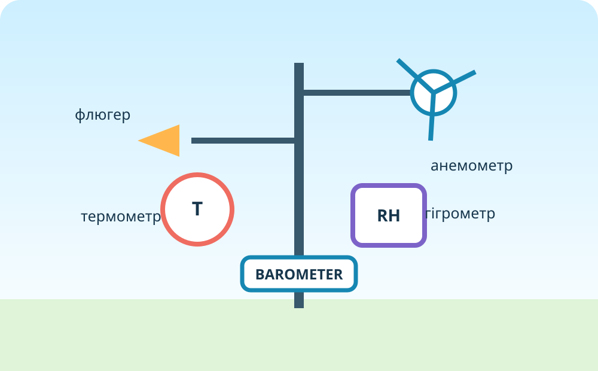
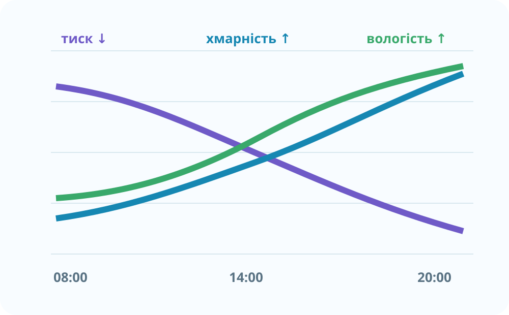

Стан нижнього шару атмосфери в певному місці у певний момент або короткий проміжок часу.
Чи можна описати погоду одним числом?

У двох місцях +18 °C. А: вітер 2 м/с, ясно, RH 45%, тиск 1022 гПа. Б: вітер 12 м/с, злива, RH 96%, тиск 998 гПа.
Віртуальна метеостанція

Доказове завдання. Учень каже: «Тиск упав з 1020 до 1002 гПа, отже завтра обов’язково буде дощ». Яких даних бракує? Назвіть три додаткові ознаки або джерела.
Реальні геодані
Перемикайте шари: вітер → температура → хмари → дощ → тиск. Які два елементи погоди найсильніше змінюються на відстані кількох сотень кілометрів? Обґрунтуйте.

Від спостереження до прогнозу

Тиск падає, хмарність і вологість зростають, вітер посилюється. Який сценарій імовірніший?
Коротке відео NASA. Назвіть одну перевагу супутника і одну перевагу наземної станції.
Теорія після діяльності
Температура, тиск, вітер, вологість, хмарність, опади.
Прогноз поєднує спостереження, супутники, радари й чисельні моделі.
CER: чому температури недостатньо?
Домашнє завдання
§32. Двічі за день зафіксуйте температуру, тиск, вітер, вологість, хмарність і опади. Поясніть, що змінилося найбільше.
Електронний підручник ВШО →